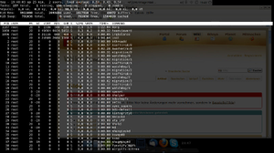
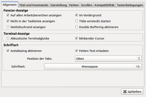

Tilda
Dieser Artikel wurde für die folgenden Ubuntu-Versionen getestet:
Ubuntu 16.04 Xenial Xerus
Ubuntu 14.04 Trusty Tahr
Zum Verständnis dieses Artikels sind folgende Seiten hilfreich:
Tilda bietet ein Terminal, die sich durch Drücken eines Tastenkürzels (Standard: F1 ) vom oberen Bildschirmrand nach unten hin öffnet oder aber wieder verschwindet. Man hat damit in Sekundenschnelle eine Kommandozeile parat, die nie im Weg steht und nebenbei auch noch gut aussieht - und das objektiv gemeint, denn sie ist vom Layout her anpassbar.
Ferner werden auch Reiter (Tabs) unterstützt, so dass trotz vieler offener Terminalsitzungen alles relativ übersichtlich bleibt. Leider ist es nicht möglich, die Tabs mit eigenen Bezeichnungen zu versehen. Bei Ubuntu MATE ist Tilda bereits vorinstalliert. Aufgerufen wird es hier mit der Taste F12 .
Alternativen sind Guake (GNOME) und Yakuake (KDE).
Installation¶
|  |
| Tilda mit Transparenz als Vollbild ohne Dekoration |
Tilda lässt sich direkt aus den Paketquellen von Ubuntu installieren. Es muss das folgende Paket installiert[1] werden:
tilda (universe)
 mit apturl
mit apturl
Paketliste zum Kopieren:
sudo apt-get install tilda
sudo aptitude install tilda
Programmstart¶
Nach der Installation kann man Tilda bei Ubuntu-Varianten mit einem Anwendungsmenü über "Zubehör -> Tilda" starten [2]. Per Befehlszeile[3] kann Tilda mit
tilda
gestartet werden. Beim ersten Starten von Tilda wird zunächst ein Konfigurationsfenster geöffnet, das sich in verschiedene Kategorien unterteilt. Mittels der Option -C (Groß-/Kleinschreibung beachten)
tilda -C
lässt sich dieses Konfigurationsfenster auch später wieder aufrufen bzw. über die Option "Einstellungen" aus dem Kontextmenü  heraus öffnen. Um Tilda automatisch starten zu lassen, muss es in den Autostart [4] der jeweiligen Desktopumgebung mit aufgenommen werden.
heraus öffnen. Um Tilda automatisch starten zu lassen, muss es in den Autostart [4] der jeweiligen Desktopumgebung mit aufgenommen werden.
Konfiguration¶
Grafische Konfiguration¶

Allgemein¶
Diese Kategorie sieht zunächst Einstellungen für "Fenster-Anzeige" vor. Dort lässt sich unter anderem einstellen, ob das Tilda-Fenster auf
allen Arbeitsbereichen erscheinen
immer im Vordergrund stehen
in der Taskleiste genannt werden
im Vordergrund erscheinen
oder versteckt gestartet werden
soll. Daneben sieht die Kategorie auch noch Einstellungen für die "Terminal-Anzeige" sowie der "Schriftart" vor. Wer die Einstellung für die "Position der Tabs" sucht, wird erstaunlicherweise im Bereich "Schriftart" fündig.
Titel und Kommando¶
Hier kann man eine "Anfangsüberschrift" und eine "Dynamische Überschrift" einstellen. Ersteres kann selbst gewählt werden (in der Voreinstellung "Tilda"), die dynamische Überschrift besteht aus dem Benutzer und dem Rechnernamen sowie dem Verzeichnis, in das man gewechselt ist (z. B. "user@host:~/Desktop"). Auch die Reihenfolge der verschiedenen Titel kann eingestellt werden.
Im Bereich "Kommando" kann man einstellen, ob ein benutzerdefinierter Befehl anstelle der Shell ausgeführt werden soll. Unter "URL-Handhabung" ist es möglich, die URL-Handhabung zu bestimmen.
Darstellung¶
Der Bereich "Darstellung" ist vielleicht der wichtigste Bereich, denn hier können die wesentlichen Parameter für das Erscheinungsbild von Tilda eingestellt werden. Neben "Höhe" und "Breite", deren Werte sowohl in Prozent als auch absolut in Pixeln angegeben werden können, kann auch die "Position" des Terminals absolut bestimmt werden. Unter "Extras" kann man optische Effekte definieren. So stehen Einstellungen zur Transparenz, zur Animation und zum Hintergrundbild zur Verfügung.
Farben¶
In diesem Bereich können die grundlegenden Einstellungen zur Hintergrundfarbe sowie zur Textfarbe getroffen werden. Im Unterschied zu Yakuake stehen hier nicht so viele voreingestellte Schemata zur Verfügung.
Scrollen¶
Unter dieser Kategorie findet man Einstellungsmöglichkeiten zur Einblendung eines Rollbalkens sowie dessen Ausrichtung.
Kompatibilität¶
Hier können das Verhalten der ⌫ -Taste sowie der Entf -Taste angepasst werden.
Tastenbelegung¶
Im Bereich Tastenbelegung ist es möglich, das Erscheinen von Tilda an eine beliebige Taste zu binden.
Benutzung¶
Die generelle Benutzung erfolgt wie in jedem Terminalfenster.
Tastenkombinationen¶
Interessant sind noch die Tastenkombinationen:
| Tastenkombinationen | Funktion |
| Strg + ⇧ + T | Neuer Tab |
| Strg + ⇧ + Bild ↑ | Nächster Tab |
| Strg + ⇧ + Bild ↓ | Vorheriger Tab |
| Alt + N | Springe zum n-ten Tab (N steht für 1, 2.. usw. die 0 für 10) |
Problembehebung¶
Schrift verschwindet¶
Bisweilen passiert es, dass in Tilda das, was man tippt, verschwindet bzw. nicht lesbar ist, alles andere im Terminal jedoch weiterhin zu lesen ist. Um dies zu beheben, muss man in den Tilda-Einstellungen, die über den Befehl:
tilda -C
zu erreichen sind, einen Haken bei "Allgemein -> Fenster-Anzeige -> Double Buffering aktivieren" machen. Danach sollte das Problem behoben sein.
Tilda hat nur gefälschte oder gar keine Transparenz¶
Anmerkung: das Folgende gilt nur, wenn ein Fenstermanager wie Compiz, xcompmgr oder ähnliche, welche echte Transparenz erlauben, aktiv ist.
Es kann vorkommen, dass Tilda schneller startet als der Fenstermanager; d.h. dass Tilda aktiv ist, bevor überhaupt echte Transparenz verfügbar ist. Um dieses Problem zu umgehen, kann man ein kleines Skript schreiben. Mit einem Editor[6] wird im Verzeichnis ~/.tilda/ ein Skript, z.B. unter dem Namen tilsta.sh, mit folgendem Inhalt erstellt:
1 2 3 4 | #!/bin/bash sleep 5 tilda -h exit 0 |
Die Datei wird ausführbar gemacht und danach tilsta.sh in den Autostart aufgenommen. Der Wert sleep 5 weist die Sitzungsverwaltung an, dass 5 Sekunden gewartet werden soll, bevor Tilda gestartet wird. Falls dieses nicht ausreichen sollte, kann der Wert beliebig erhöht werden.

 Übersichtsartikel
Übersichtsartikel- Erstellt mit Inyoka
-
 2004 – 2017 ubuntuusers.de • Einige Rechte vorbehalten
2004 – 2017 ubuntuusers.de • Einige Rechte vorbehalten
Lizenz • Kontakt • Datenschutz • Impressum • Serverstatus -
Serverhousing gespendet von